Changes in PRIMAP-hist v2.5.1_final compared to v2.5_final for Turkey
2024-02-29
Johannes Gütschow
Change analysis for Turkey for PRIMAP-hist v2.5.1_final compared to v2.5_final
Overview over emissions by sector and gas
The following figures show the aggregate national total emissions excluding LULUCF AR6GWP100 for the country reported priority scenario. The dotted linesshow the v2.5_final data.

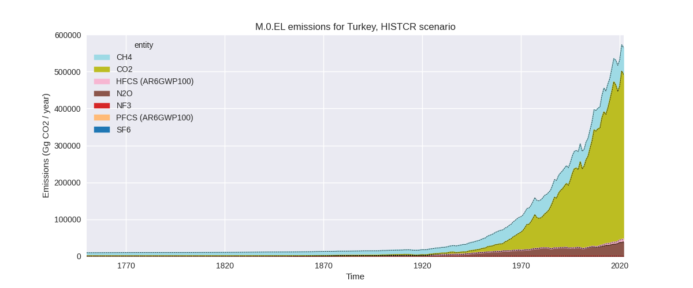
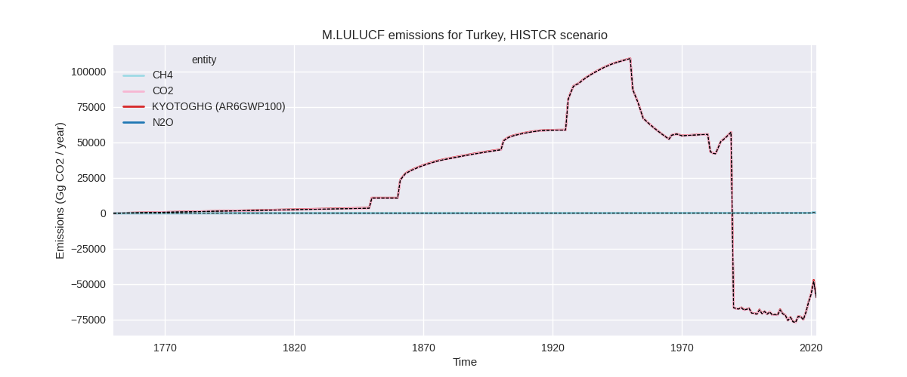
The following figures show the aggregate national total emissions excluding LULUCF AR6GWP100 for the third party priority scenario. The dotted linesshow the v2.5_final data.
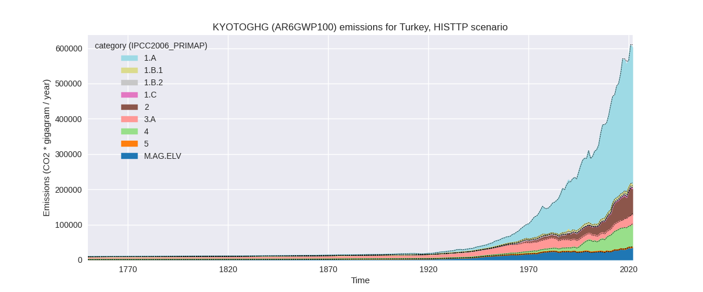
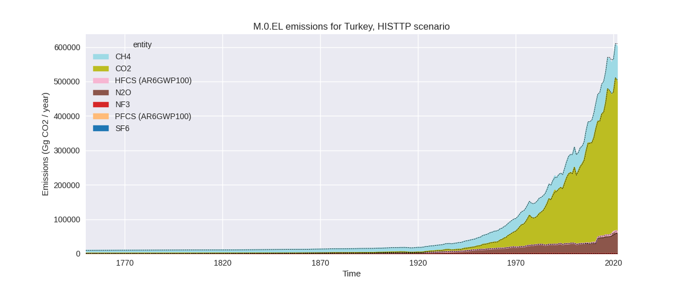
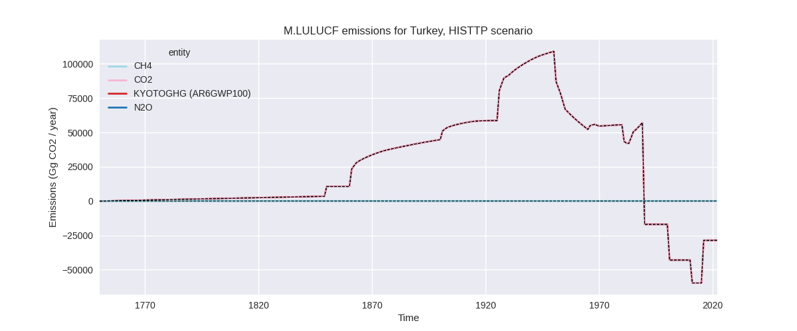
Overview over changes
In the country reported priority scenario we have the following changes for aggregate Kyoto GHG and national total emissions excluding LULUCF (M.0.EL):
- Emissions in 2022 have changed by 0.3%% (1806.79 Gg CO2 / year)
- Emissions in 1990-2022 have changed by -0.0%% (-149.08 Gg CO2 / year)
In the third party priority scenario we have the following changes for aggregate Kyoto GHG and national total emissions excluding LULUCF (M.0.EL):
- Emissions in 2022 have changed by -1.2%% (-7214.45 Gg CO2 / year)
- Emissions in 1990-2022 have changed by -0.4%% (-1495.19 Gg CO2 / year)
Most important changes per scenario and time frame
In the country reported priority scenario the following sector-gas combinations have the highest absolute impact on national total KyotoGHG (AR6GWP100) emissions in 2022 (top 5):
- 1: 1.B.1, CH4 with 1945.92 Gg CO2 / year (32.2%)
- 2: 2, CO2 with -1689.61 Gg CO2 / year (-2.9%)
- 3: 1.A, N2O with 895.00 Gg CO2 / year (25.7%)
- 4: 1.B.1, CO2 with -884.51 Gg CO2 / year (-27.0%)
- 5: M.AG.ELV, N2O with 799.94 Gg CO2 / year (3.0%)
In the country reported priority scenario the following sector-gas combinations have the highest absolute impact on national total KyotoGHG (AR6GWP100) emissions in 1990-2022 (top 5):
- 1: 1.B.1, CO2 with -230.63 Gg CO2 / year (-9.9%)
- 2: 1.B.1, CH4 with 58.97 Gg CO2 / year (1.1%)
- 3: 2, CO2 with -51.20 Gg CO2 / year (-0.1%)
- 4: 1.A, N2O with 27.12 Gg CO2 / year (1.0%)
- 5: M.AG.ELV, N2O with 24.24 Gg CO2 / year (0.1%)
In the third party priority scenario the following sector-gas combinations have the highest absolute impact on national total KyotoGHG (AR6GWP100) emissions in 2022 (top 5):
- 1: 4, CH4 with -4055.53 Gg CO2 / year (-6.2%)
- 2: 1.A, CO2 with -2558.98 Gg CO2 / year (-0.7%)
- 3: 1.B.2, CH4 with -1372.49 Gg CO2 / year (-26.0%)
- 4: 1.B.1, CH4 with 996.73 Gg CO2 / year (26.1%)
- 5: M.AG.ELV, CO2 with -961.18 Gg CO2 / year (-22.2%)
In the third party priority scenario the following sector-gas combinations have the highest absolute impact on national total KyotoGHG (AR6GWP100) emissions in 1990-2022 (top 5):
- 1: 1.B.2, CH4 with -967.46 Gg CO2 / year (-36.3%)
- 2: 1.A, CO2 with -498.03 Gg CO2 / year (-0.2%)
- 3: 1.B.1, CO2 with -230.63 Gg CO2 / year (-9.9%)
- 4: 2, N2O with 182.11 Gg CO2 / year (2.1%)
- 5: 1.B.1, CH4 with 123.94 Gg CO2 / year (3.3%)
Notes on data changes
No country specific notes present for this changelog.
Changes by sector and gas
For each scenario and time frame the changes are displayed for all individual sectors and all individual gases. In the sector plot we use aggregate Kyoto GHGs in AR6GWP100. In the gas plot we usenational total emissions without LULUCF. ## country reported scenario
2022
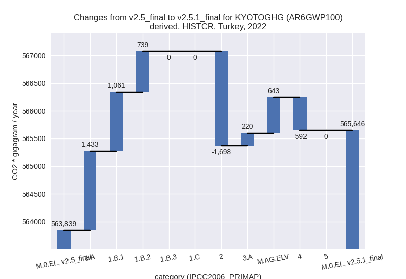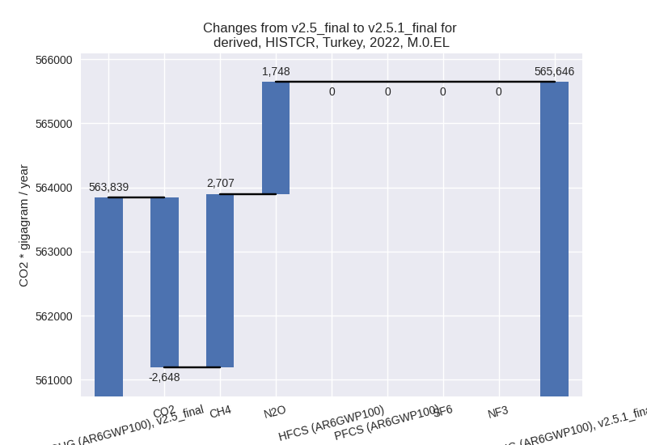
1990-2022
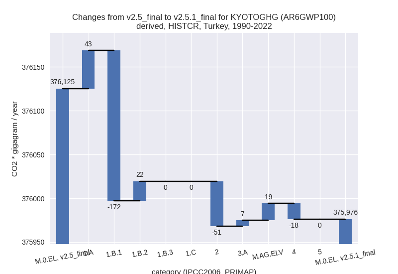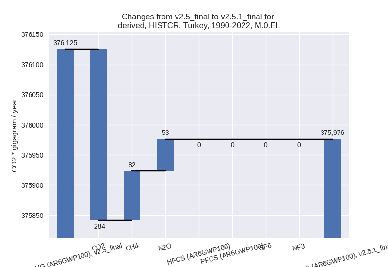
third party scenario
2022
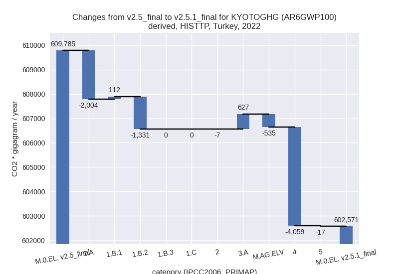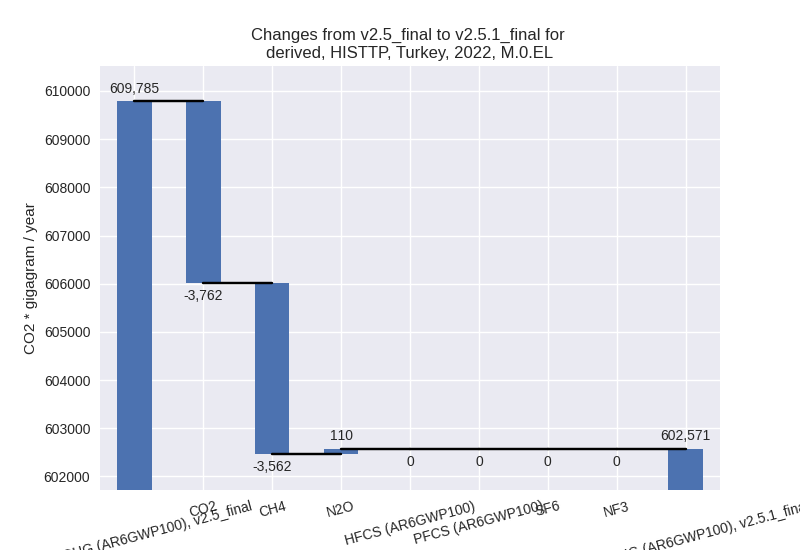
1990-2022
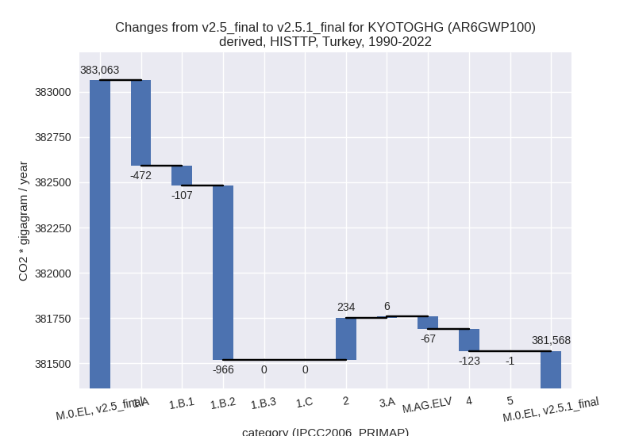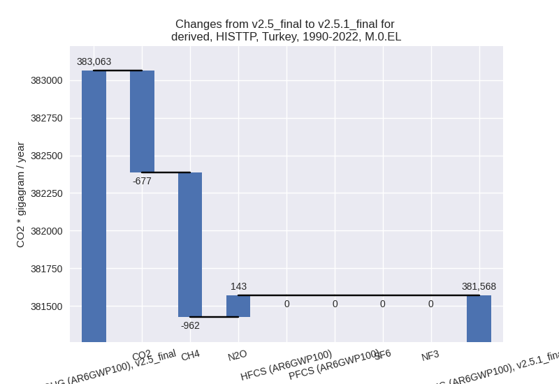
Detailed changes for the scenarios:
country reported scenario (HISTCR):
Most important changes per time frame
For 2022 the following sector-gas combinations have the highest absolute impact on national total KyotoGHG (AR6GWP100) emissions in 2022 (top 5):
- 1: 1.B.1, CH4 with 1945.92 Gg CO2 / year (32.2%)
- 2: 2, CO2 with -1689.61 Gg CO2 / year (-2.9%)
- 3: 1.A, N2O with 895.00 Gg CO2 / year (25.7%)
- 4: 1.B.1, CO2 with -884.51 Gg CO2 / year (-27.0%)
- 5: M.AG.ELV, N2O with 799.94 Gg CO2 / year (3.0%)
For 1990-2022 the following sector-gas combinations have the highest absolute impact on national total KyotoGHG (AR6GWP100) emissions in 1990-2022 (top 5):
- 1: 1.B.1, CO2 with -230.63 Gg CO2 / year (-9.9%)
- 2: 1.B.1, CH4 with 58.97 Gg CO2 / year (1.1%)
- 3: 2, CO2 with -51.20 Gg CO2 / year (-0.1%)
- 4: 1.A, N2O with 27.12 Gg CO2 / year (1.0%)
- 5: M.AG.ELV, N2O with 24.24 Gg CO2 / year (0.1%)
Changes in the main sectors for aggregate KyotoGHG (AR6GWP100) are
- 1: Total sectoral emissions in 2022 are 404580.29 Gg CO2 / year which is 71.5% of M.0.EL emissions. 2022 Emissions have changed by 0.8% (3233.51 Gg CO2 / year). 1990-2022 Emissions have changed by -0.0% (-105.85 Gg CO2 / year).
- 2: Total sectoral emissions in 2022 are 66706.37 Gg
CO2 / year which is 11.8% of M.0.EL emissions. 2022 Emissions have
changed by -2.5% (-1697.57 Gg CO2 /
year). 1990-2022 Emissions have changed by -0.1% (-51.44 Gg CO2 / year). For 2022 the
changes per gas
are:
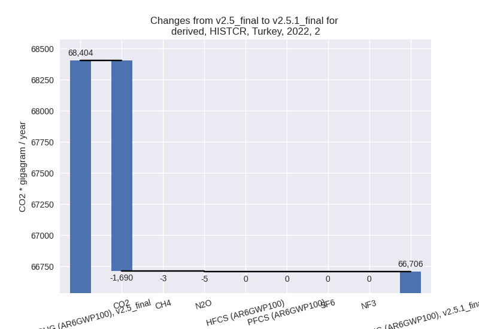 - M.AG: Total sectoral emissions in 2022 are 77888.00 Gg CO2 / year which is 13.8% of M.0.EL emissions. 2022 Emissions have changed by 1.1% (862.65 Gg CO2 / year). 1990-2022 Emissions have changed by 0.1% (26.14 Gg CO2 / year).
- 4: Total sectoral emissions in 2022 are 16471.36 Gg
CO2 / year which is 2.9% of M.0.EL emissions. 2022 Emissions have
changed by -3.5% (-591.80 Gg CO2 /
year). 1990-2022 Emissions have changed by -0.1% (-17.93 Gg CO2 / year). For 2022 the
changes per gas
are:
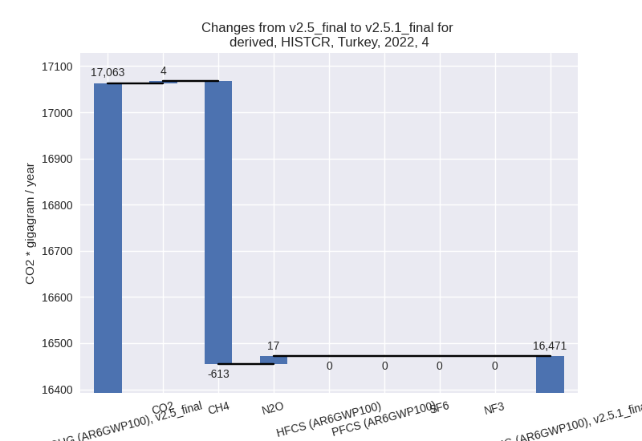 - 5: No data
third party scenario (HISTTP):
Most important changes per time frame
For 2022 the following sector-gas combinations have the highest absolute impact on national total KyotoGHG (AR6GWP100) emissions in 2022 (top 5):
- 1: 4, CH4 with -4055.53 Gg CO2 / year (-6.2%)
- 2: 1.A, CO2 with -2558.98 Gg CO2 / year (-0.7%)
- 3: 1.B.2, CH4 with -1372.49 Gg CO2 / year (-26.0%)
- 4: 1.B.1, CH4 with 996.73 Gg CO2 / year (26.1%)
- 5: M.AG.ELV, CO2 with -961.18 Gg CO2 / year (-22.2%)
For 1990-2022 the following sector-gas combinations have the highest absolute impact on national total KyotoGHG (AR6GWP100) emissions in 1990-2022 (top 5):
- 1: 1.B.2, CH4 with -967.46 Gg CO2 / year (-36.3%)
- 2: 1.A, CO2 with -498.03 Gg CO2 / year (-0.2%)
- 3: 1.B.1, CO2 with -230.63 Gg CO2 / year (-9.9%)
- 4: 2, N2O with 182.11 Gg CO2 / year (2.1%)
- 5: 1.B.1, CH4 with 123.94 Gg CO2 / year (3.3%)
Changes in the main sectors for aggregate KyotoGHG (AR6GWP100) are
- 1: Total sectoral emissions in 2022 are 400358.28 Gg CO2 / year which is 66.4% of M.0.EL emissions. 2022 Emissions have changed by -0.8% (-3223.40 Gg CO2 / year). 1990-2022 Emissions have changed by -0.6% (-1544.88 Gg CO2 / year).
- 2: Total sectoral emissions in 2022 are 74526.74 Gg CO2 / year which is 12.4% of M.0.EL emissions. 2022 Emissions have changed by -0.0% (-7.30 Gg CO2 / year). 1990-2022 Emissions have changed by 0.6% (234.26 Gg CO2 / year).
- M.AG: Total sectoral emissions in 2022 are 63676.18 Gg CO2 / year which is 10.6% of M.0.EL emissions. 2022 Emissions have changed by 0.1% (91.68 Gg CO2 / year). 1990-2022 Emissions have changed by -0.1% (-61.07 Gg CO2 / year).
- 4: Total sectoral emissions in 2022 are 62477.39 Gg
CO2 / year which is 10.4% of M.0.EL emissions. 2022 Emissions have
changed by -6.1% (-4058.63 Gg CO2 /
year). 1990-2022 Emissions have changed by -0.3% (-122.99 Gg CO2 / year). For 2022
the changes per gas
are:
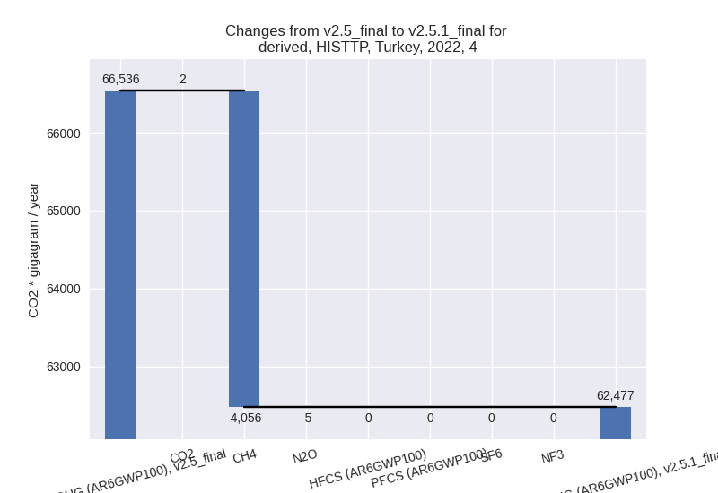 - 5: Total sectoral emissions in 2022 are 1532.31 Gg CO2 / year which is 0.3% of M.0.EL emissions. 2022 Emissions have changed by -1.1% (-16.79 Gg CO2 / year). 1990-2022 Emissions have changed by -0.0% (-0.51 Gg CO2 / year).